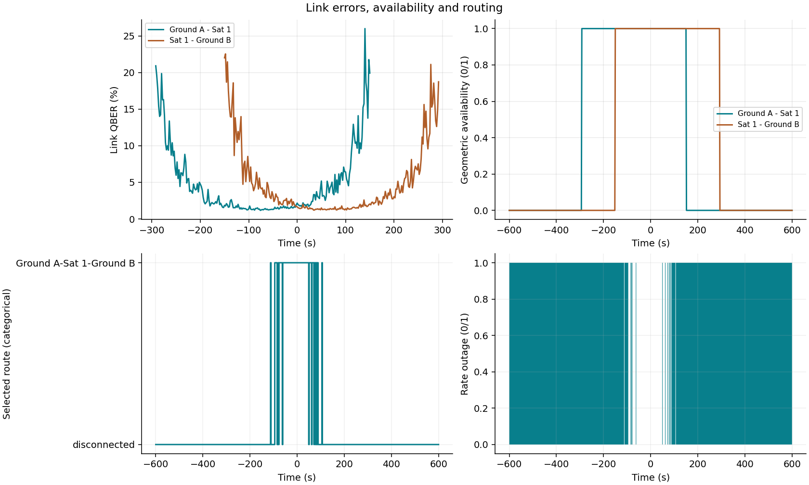
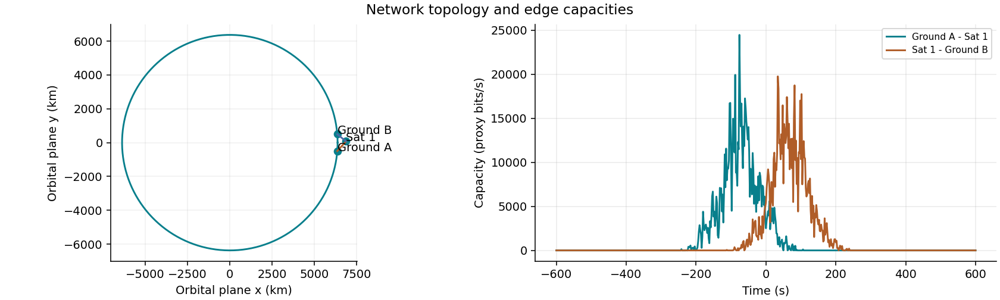
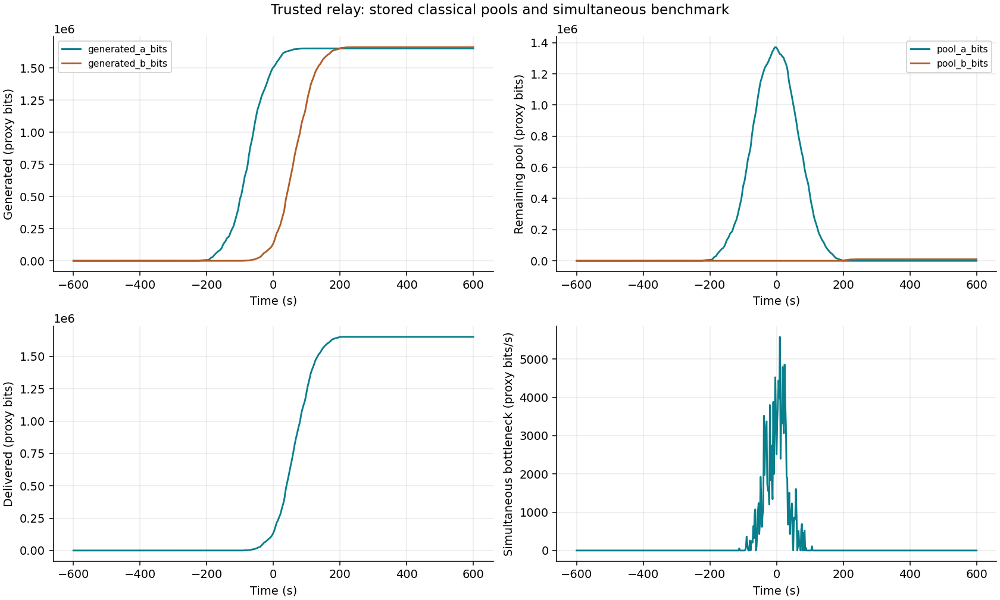
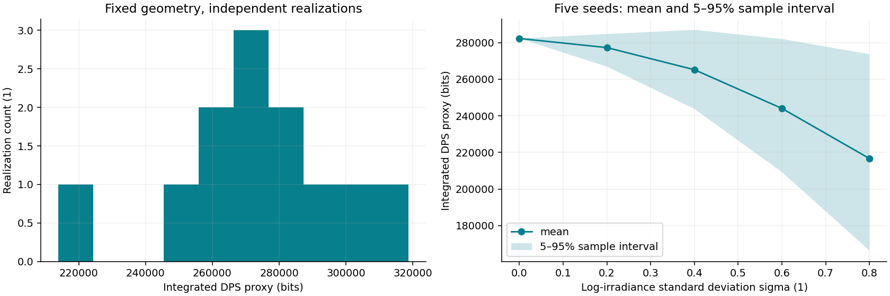

DPS illustrative rate proxy; no composable security bound established; route and inventory are proxy budgets
Simulated data. Independent per-edge resources. No certified secret key. Parameters and units: results.json. Ensemble: ensemble.csv.
| mean_rate_bps | 231.71705369483684 |
| median_rate_bps | 0.0 |
| p05_rate_bps | 0.0 |
| outage_fraction | 0.8602329450915142 |
| time_outage_fraction | 0.86 |
| integrated_rate_bits | 278523.89854119386 |





